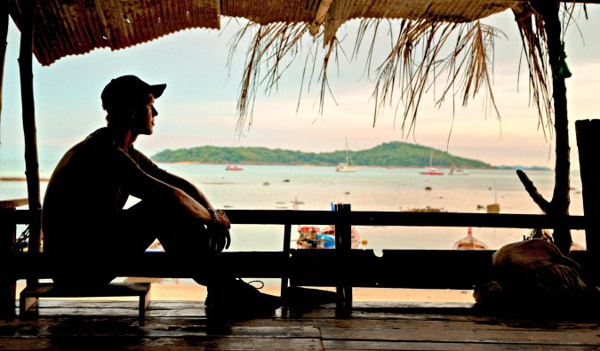

9 reason to visit Thailand in 2018
The political trouble in Thailand has brought the country into the
news a lot lately.
4.8
26

8 ways to stay motivated to travel
Motivated people can achieve anything they set their mind to.
4.9
64
Inside: how a boeing is built
I went to the Boeing factory in South Carolina to find out how they build
4.3
18
How not to fell overwhelmed
You might be feeling a lot of anxiety planning your trip and you might
be worried
3.9
81
How to conquer the city Berlin
Berlin is a gigantic city. I knew it was big, but until I decided to explore it by foot
5.0
125